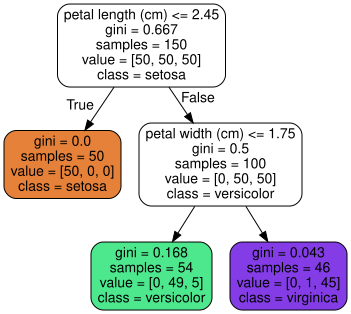
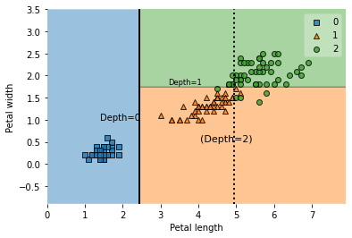
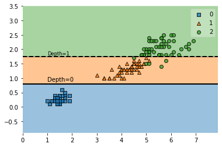
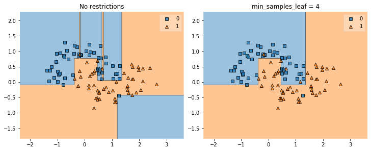
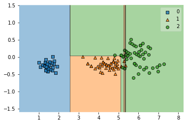
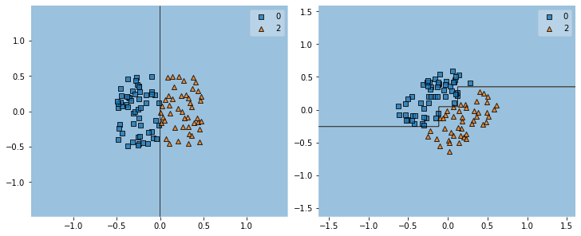
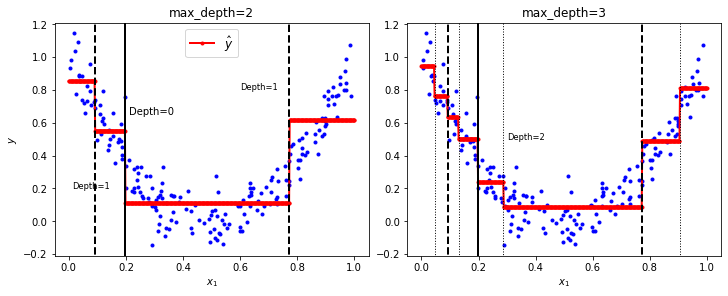
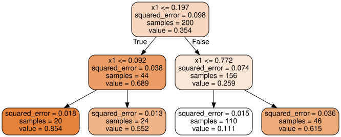
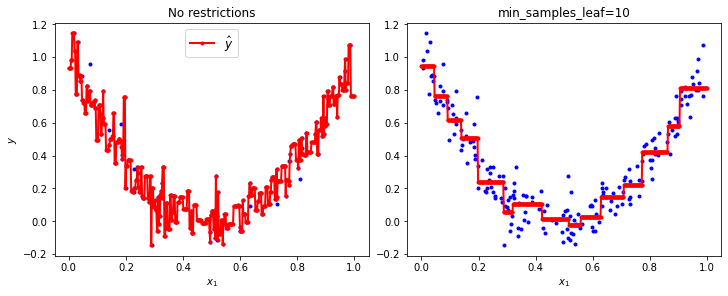

决策树
Contents
决策树#
import matplotlib.pyplot as plt
import numpy as np
训练#
from sklearn.datasets import load_iris
from sklearn.tree import DecisionTreeClassifier
iris = load_iris()
X = iris.data[:, 2:] # petal length and width
y = iris.target
tree_clf = DecisionTreeClassifier(max_depth=2, random_state=42)
tree_clf.fit(X, y)
DecisionTreeClassifier(max_depth=2, random_state=42)In a Jupyter environment, please rerun this cell to show the HTML representation or trust the notebook.
On GitHub, the HTML representation is unable to render, please try loading this page with nbviewer.org.
DecisionTreeClassifier(max_depth=2, random_state=42)
from graphviz import Source
from sklearn.tree import export_graphviz
export_graphviz(tree_clf,
out_file="../../datasets/handson/iris_tree.dot",
feature_names=iris.feature_names[2:],
class_names=iris.target_names,
rounded=True,
filled=True)
Source.from_file("../../datasets/handson/iris_tree.dot")

from mlxtend.plotting import plot_decision_regions
lims = [0, 7.5, 0, 3]
labels = ["Iris setosa", "Iris versicolor", "Iris virginica"]
styles = ["yo", "bs", "g^"]
_, ax = plt.subplots(figsize=(6, 4))
plot_decision_regions(X, y, clf=tree_clf, ax=ax)
ax.set(xlabel="Petal length", ylabel="Petal width")
splits = [2.45, 1.75, 4.95, 4.85]
ax.axvline(splits[0], lims[2], lims[3], c='k', ls="-", lw=2)
ax.axhline(splits[1], splits[0], lims[1], c='k', ls="--", lw=2)
ax.axvline(splits[2], lims[2], splits[1], c='k', ls=":", lw=2)
ax.axvline(splits[3], splits[1], lims[3], c='k', ls=":", lw=2)
ax.text(1.40, 1.0, "Depth=0", fontsize='medium')
ax.text(3.2, 1.80, "Depth=1", fontsize='small')
ax.text(4.05, 0.5, "(Depth=2)", fontsize=11)
plt.show()

预测#
tree_clf.predict_proba([[5, 1.5]])
array([[0. , 0.90740741, 0.09259259]])
tree_clf.predict([[5, 1.5]])
array([1])
高方差#
tree_clf_tweaked = DecisionTreeClassifier(max_depth=2, random_state=40)
tree_clf_tweaked.fit(X, y)
DecisionTreeClassifier(max_depth=2, random_state=40)In a Jupyter environment, please rerun this cell to show the HTML representation or trust the notebook.
On GitHub, the HTML representation is unable to render, please try loading this page with nbviewer.org.
DecisionTreeClassifier(max_depth=2, random_state=40)
_, ax = plt.subplots(figsize=(6, 4))
lims = [0, 7.5, 0, 3]
splits = [0.8, 1.75]
plot_decision_regions(X, y, clf=tree_clf_tweaked, ax=ax)
ax.axhline(splits[0], lims[0], lims[1], c='k', ls="-", lw=2)
ax.axhline(splits[1], lims[0], lims[1], c='k', ls="--", lw=2)
ax.text(1.0, 0.9, "Depth=0", fontsize='medium')
ax.text(1.0, 1.80, "Depth=1", fontsize='small')
plt.show()

from sklearn.datasets import make_moons
Xm, ym = make_moons(n_samples=100, noise=0.25, random_state=53)
deep_tree_clf1 = DecisionTreeClassifier(random_state=42)
deep_tree_clf2 = DecisionTreeClassifier(min_samples_leaf=4, random_state=42)
deep_tree_clf1.fit(Xm, ym)
deep_tree_clf2.fit(Xm, ym)
lims = [-1.5, 2.4, -1, 1.5]
_, axes = plt.subplots(1, 2, figsize=(10, 4), constrained_layout=True)
plot_decision_regions(Xm, ym, clf=deep_tree_clf1, ax=axes[0])
plot_decision_regions(Xm, ym, clf=deep_tree_clf2, ax=axes[1])
axes[0].set(title="No restrictions")
axes[1].set(title=f"min_samples_leaf = {deep_tree_clf2.min_samples_leaf}",
ylabel="")
plt.show()

angle = np.pi / 180 * 20
rotation_matrix = np.array([[np.cos(angle), -np.sin(angle)],
[np.sin(angle), np.cos(angle)]])
Xr = X.dot(rotation_matrix)
tree_clf_r = DecisionTreeClassifier(random_state=42)
tree_clf_r.fit(Xr, y)
lims = [0.5, 7.5, -1.0, 1]
_, ax = plt.subplots(figsize=(6, 4))
plot_decision_regions(Xr, y, clf=tree_clf_r, ax=ax)
plt.show()

np.random.seed(6)
Xs = np.random.rand(100, 2) - 0.5
ys = (Xs[:, 0] > 0).astype(np.float32) * 2
angle = np.pi / 4
rotation_matrix = np.array([[np.cos(angle), -np.sin(angle)],
[np.sin(angle), np.cos(angle)]])
Xsr = Xs.dot(rotation_matrix)
tree_clf_s = DecisionTreeClassifier(random_state=42)
tree_clf_s.fit(Xs, ys)
tree_clf_sr = DecisionTreeClassifier(random_state=42)
tree_clf_sr.fit(Xsr, ys)
lims = [-0.7, 0.7, -0.7, 0.7]
_, axes = plt.subplots(1, 2, figsize=(10, 4), constrained_layout=True)
plot_decision_regions(Xs, ys.astype(np.int_), clf=tree_clf_s, ax=axes[0])
plot_decision_regions(Xsr, ys.astype(np.int_), clf=tree_clf_sr, ax=axes[1])
axes[1].set(ylabel="")
plt.show()

回归树#
np.random.seed(42)
m = 200
X = np.random.rand(m, 1)
y = 4 * (X - 0.5) ** 2
y = y + np.random.randn(m, 1) / 10
from sklearn.tree import DecisionTreeRegressor
tree_reg = DecisionTreeRegressor(max_depth=2, random_state=42)
tree_reg.fit(X, y)
DecisionTreeRegressor(max_depth=2, random_state=42)In a Jupyter environment, please rerun this cell to show the HTML representation or trust the notebook.
On GitHub, the HTML representation is unable to render, please try loading this page with nbviewer.org.
DecisionTreeRegressor(max_depth=2, random_state=42)
def plot_regression_predictions(tree_reg,
X,
y,
ax,
lims=[0, 1, -0.2, 1],
ylabel="$y$"):
x1 = np.linspace(lims[0], lims[1], 500).reshape(-1, 1)
y_pred = tree_reg.predict(x1)
ax.set(xlabel="$x_1$")
if ylabel:
ax.set(ylabel=ylabel)
ax.plot(X, y, "b.")
ax.plot(x1, y_pred, "r.-", lw=2, label=r"$\hat{y}$")
tree_reg1 = DecisionTreeRegressor(random_state=42, max_depth=2)
tree_reg2 = DecisionTreeRegressor(random_state=42, max_depth=3)
tree_reg1.fit(X, y)
tree_reg2.fit(X, y)
_, axes = plt.subplots(1, 2, figsize=(10, 4), constrained_layout=True)
plot_regression_predictions(tree_reg1, X, y, ax=axes[0])
for split, ls in ((0.1973, "-"), (0.0917, "--"), (0.7718, "--")):
axes[0].axvline(split, -0.2, 1, c='k', ls=ls, lw=2)
axes[0].text(0.21, 0.65, "Depth=0", fontsize='medium')
axes[0].text(0.01, 0.2, "Depth=1", fontsize='small')
axes[0].text(0.6, 0.8, "Depth=1", fontsize='small')
axes[0].legend(loc="upper center", fontsize='large')
axes[0].set(title="max_depth=2")
plot_regression_predictions(tree_reg2, X, y, ax=axes[1], ylabel=None)
for split, ls in ((0.1973, "-"), (0.0917, "--"), (0.7718, "--")):
axes[1].axvline(split, -0.2, 1, c='k', ls=ls, lw=2)
for split in (0.0458, 0.1298, 0.2873, 0.9040):
axes[1].axvline(split, -0.2, 1, c="k", ls=':', lw=1)
axes[1].text(0.3, 0.5, "Depth=2", fontsize='small')
axes[1].set(title="max_depth=3")
plt.show()

export_graphviz(tree_reg1,
out_file="../../datasets/handson/reg_tree.dot",
feature_names=["x1"],
rounded=True,
filled=True)
Source.from_file("../../datasets/handson/reg_tree.dot")

tree_reg1 = DecisionTreeRegressor(random_state=42)
tree_reg2 = DecisionTreeRegressor(random_state=42, min_samples_leaf=10)
tree_reg1.fit(X, y)
tree_reg2.fit(X, y)
x1 = np.linspace(0, 1, 500).reshape(-1, 1)
y_pred1 = tree_reg1.predict(x1)
y_pred2 = tree_reg2.predict(x1)
_, axes = plt.subplots(1, 2, figsize=(10, 4), constrained_layout=True)
lims = [0, 1, -0.2, 1.1]
y_preds = [y_pred1, y_pred2]
for y_pred, ax in zip(y_preds, axes.flatten()):
ax.plot(X, y, "b.")
ax.plot(x1, y_pred, "r.-", lw=2, label=r"$\hat{y}$")
ax.set(xlabel="$x_1$")
axes[0].set(ylabel="$y$", title="No restrictions")
axes[0].legend(loc="upper center", fontsize='large')
axes[1].set(title=f"min_samples_leaf={tree_reg2.min_samples_leaf}", )
plt.show()

习题#
训练并调试决策树#
from sklearn.datasets import make_moons
X, y = make_moons(n_samples=10000, noise=0.4, random_state=42)
from sklearn.model_selection import train_test_split
X_train, X_test, y_train, y_test = train_test_split(X,
y,
test_size=0.2,
random_state=42)
from sklearn.model_selection import GridSearchCV
params = {
'max_leaf_nodes': list(range(2, 100)),
'min_samples_split': [2, 3, 4]
}
grid_search_cv = GridSearchCV(DecisionTreeClassifier(random_state=42),
params,
verbose=1,
cv=3)
grid_search_cv.fit(X_train, y_train)
Fitting 3 folds for each of 294 candidates, totalling 882 fits
GridSearchCV(cv=3, estimator=DecisionTreeClassifier(random_state=42),
param_grid={'max_leaf_nodes': [2, 3, 4, 5, 6, 7, 8, 9, 10, 11, 12,
13, 14, 15, 16, 17, 18, 19, 20, 21,
22, 23, 24, 25, 26, 27, 28, 29, 30,
31, ...],
'min_samples_split': [2, 3, 4]},
verbose=1)In a Jupyter environment, please rerun this cell to show the HTML representation or trust the notebook. On GitHub, the HTML representation is unable to render, please try loading this page with nbviewer.org.
GridSearchCV(cv=3, estimator=DecisionTreeClassifier(random_state=42),
param_grid={'max_leaf_nodes': [2, 3, 4, 5, 6, 7, 8, 9, 10, 11, 12,
13, 14, 15, 16, 17, 18, 19, 20, 21,
22, 23, 24, 25, 26, 27, 28, 29, 30,
31, ...],
'min_samples_split': [2, 3, 4]},
verbose=1)DecisionTreeClassifier(random_state=42)
DecisionTreeClassifier(random_state=42)
grid_search_cv.best_estimator_
DecisionTreeClassifier(max_leaf_nodes=17, random_state=42)In a Jupyter environment, please rerun this cell to show the HTML representation or trust the notebook.
On GitHub, the HTML representation is unable to render, please try loading this page with nbviewer.org.
DecisionTreeClassifier(max_leaf_nodes=17, random_state=42)
from sklearn.metrics import accuracy_score
y_pred = grid_search_cv.predict(X_test)
accuracy_score(y_test, y_pred)
0.8695
洗牌切分#
from sklearn.model_selection import ShuffleSplit
n_trees = 1000
n_instances = 100
mini_sets = []
rs = ShuffleSplit(n_splits=n_trees,
test_size=len(X_train) - n_instances,
random_state=42)
for mini_train_index, mini_test_index in rs.split(X_train):
X_mini_train = X_train[mini_train_index]
y_mini_train = y_train[mini_train_index]
mini_sets.append((X_mini_train, y_mini_train))
克隆#
from sklearn.base import clone
forest = [clone(grid_search_cv.best_estimator_) for _ in range(n_trees)]
accuracy_scores = []
for tree, (X_mini_train, y_mini_train) in zip(forest, mini_sets):
tree.fit(X_mini_train, y_mini_train)
y_pred = tree.predict(X_test)
accuracy_scores.append(accuracy_score(y_test, y_pred))
np.mean(accuracy_scores)
0.805475
投票#
Y_pred = np.empty([n_trees, len(X_test)], dtype=np.uint8)
for tree_index, tree in enumerate(forest):
Y_pred[tree_index] = tree.predict(X_test)
from scipy.stats import mode
y_pred_majority_votes, n_votes = mode(Y_pred, axis=0)
评估#
accuracy_score(y_test, y_pred_majority_votes.reshape([-1]))
0.872